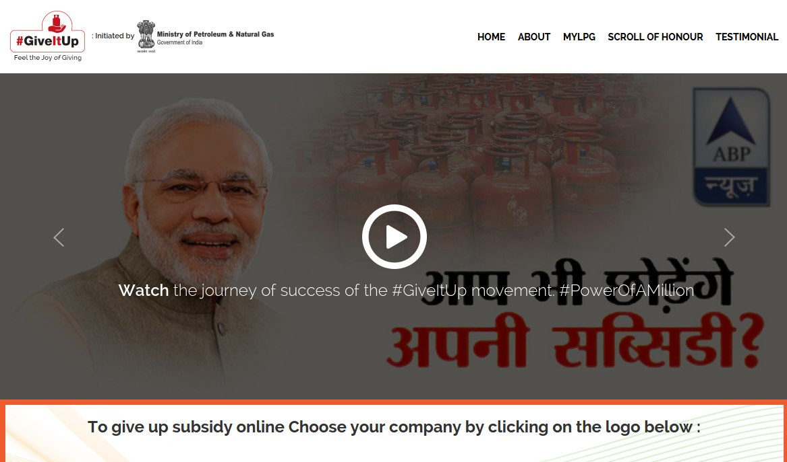

20
X is a wesbite created by the Ministry of Petroleum and Natural Gas, Government of India as part of a nationwide movement launched in October, 2014. Following Prime Minister Narendra Modi's vision, the movement aims to encourage well-off citizens to let go of the subsidy they receive on cooking gas cylinders. The website offers one-click ways for people to quit receiving this subsidy, thus facilitating this country-wide campaign that has seen a staggering response. Name the website.
